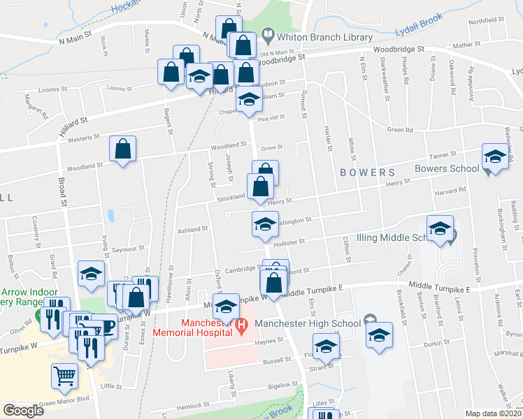

HOME THINGSTODO FOODANDDRINK SHOPPING WHERETOSAY
Manchester’s food and drink culture is thriving. With new restaurants, bars, gastropubs, micro breweries and cafes opening weekly, the city is establishing itself as one of the UK’s most exciting foodie destinations. From fine dining and afternoon tea to pop-up markets and humble street food, Greater Manchester is packed with options to suit any mood offering any and every cuisine you can think of. Why not try foodie destination, the Corn Exchange, or experience contemporary pub, The Pilcrow at Sadler's Yard. Experience local produce or one of Greater Manchester's independent and quirky coffee shops. This city is a haven for vegan and vegetarian cuisine, and is fit to burst with a number of halal options too. From family friendly joints perfect for the little (and big) ones, to Manchester's vast array of cafe's and delis, you'll be spoilt for choice. 
there are alot of places to eat in manchester and such great places to visit and alot of vairiaty of choices